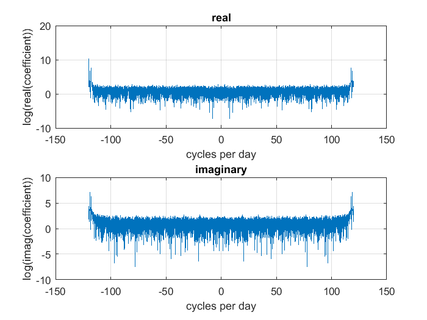

Contents
Ren_data1_week4.m
Sea surface pressure, fitting with Fourier coefficients
A. Ren October 26, 2017
load data
load('../Week3/scrippspier_auto_p.mat')
want evenly spaced data: use January 2015
dataspacing = diff(SP_time_2015_mtlabtime);
inde = find(dataspacing ~= duration(0, 6, 1), 1, 'first');
disp('time increment non-uniform after: ');
disp(SP_time_2015_mtlabtime(inde))
sampledat_w = SP_press_2015(1:inde);
sampletim_w = SP_time_2015_mtlabtime(1:inde);
sampletel_w = sampletim_w - sampletim_w(1);
sampletel_w = days(sampletel_w);
time increment non-uniform after:
04-Feb-2015 09:24:36
check for NaN
sum(isnan(sampledat_w))
ans =
0
fft
coefficients = fft(sampledat_w);
realpart = real(coefficients);
imagpart = imag(coefficients);
N = length(sampledat_w);
scale = 1/361 *3600*24;
frequencyaxis = scale* (0:N/2)/N;
negfreq = -frequencyaxis(2:end);
totfreq = [fliplr(negfreq) frequencyaxis(2:end)];
figure('Name', 'Plotting Fourier Coefficients-full')
subplot(2, 1, 1)
plot(totfreq, log(realpart))
title('real')
xlabel('cycles per day')
ylabel('log(real(coefficient))')
grid on
subplot(2, 1, 2)
plot(totfreq, log(imagpart))
title('imaginary')
xlabel('cycles per day')
ylabel('log(imag(coefficient))')
grid on
Warning: Imaginary parts of complex X and/or Y arguments
ignored
Warning: Imaginary parts of complex X and/or Y arguments
ignored

we only need the first N/2+1
coeffi = coefficients(1:N/2+1);
rp = real(coeffi);
ip = imag(coeffi);
figure('Name', 'Plotting Fourier Coefficients')
subplot(2, 1, 1)
plot(frequencyaxis, log(rp))
title('real')
xlabel('cycles per day')
ylabel('log(real(coefficient))')
grid on
subplot(2, 1, 2)
plot(frequencyaxis, log(ip))
title('imaginary')
xlabel('cycles per day')
ylabel('log(imag(coefficient))')
grid on
Warning: Imaginary parts of complex X and/or Y arguments
ignored
Warning: Imaginary parts of complex X and/or Y arguments
ignored
figure('Name', 'Plotting Fourier Coefficients')
subplot(2, 1, 1)
plot(frequencyaxis, log(rp))
title('real')
xlabel('cycles per day')
ylabel('log(real(coefficient))')
grid on
xlim([0, 5])
subplot(2, 1, 2)
plot(frequencyaxis, log(ip))
title('imaginary')
xlabel('cycles per day')
ylabel('log(imag(coefficient))')
grid on
xlim([0, 5])
Warning: Imaginary parts of complex X and/or Y arguments
ignored
Warning: Imaginary parts of complex X and/or Y arguments
ignored
amplitude of major peaks
amplitude = sqrt(rp.^2 +ip.^2)/N;
amplitude(2:end-1) = 2*amplitude(2:end-1);
meanofdata = amplitude(1);
disp('mean pressure: '); disp(meanofdata);
valdif = abs(frequencyaxis-1.929);
ind1 = find(valdif == min(valdif));
valdif = abs(frequencyaxis-1.008);
ind2 = find(valdif == min(valdif));
valdif = abs(frequencyaxis-0.9214);
ind3 = find(valdif == min(valdif));
ampm2 = amplitude(ind1)
ampk1 = amplitude(ind2)
ampo1 = amplitude(ind3)
mean pressure:
3.4861
ampm2 =
0.5215
ampk1 =
0.3591
ampo1 =
0.1802
amplitude - spectral power
amp = abs(coeffi).^2;
amp(2:end-1) = 2*amp(2:end-1);
amp = amp/N;
figure
loglog(frequencyaxis, amp)
grid on
xlabel('Cycles Per Day')
ylabel('db^{2}/cpd')
derivative
figure('Name', 'Power Spectrum, first derivative')
loglog(frequencyaxis, amp.*frequencyaxis')
grid on
xlabel('Cycles Per Day')
ylabel('db^{2}/cpd')